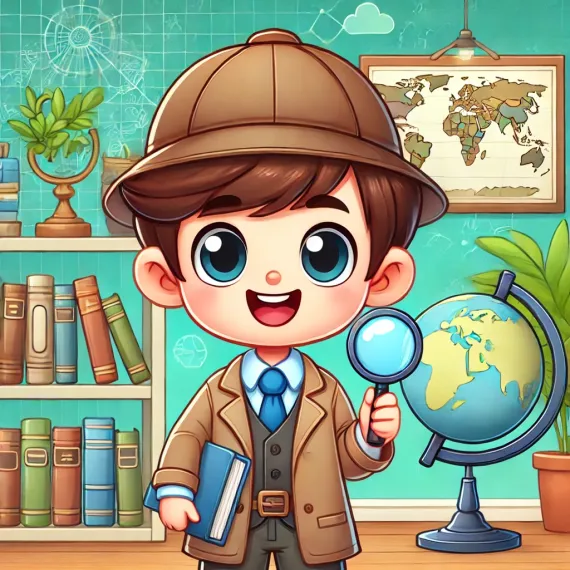

Investigador
-
Son los detectives del equipo. Su trabajo es buscar toda la información importante sobre el problema que eligieron. Averigua por qué sucede, a quién afecta y cómo se podría solucionar.
- Busca en internet, libros o pregunta a expertos.
- Anota todo lo que encuentres y compártelo con tu equipo.
- Ayuda a que todos tengan claro de qué se trata el problema.